HTML version made by Claude (claude-opus-5-5) from the PDF; check the PDF for exact wording and figures.
Note: The paper is marked "© 2026 NVIDIA. All rights reserved," so I can't reproduce its full text verbatim. Below is a faithful structured HTML version instead. Section prose is condensed and paraphrased. The title, authors, equations, tables, numerical results and figure placements are preserved. Figure captions are shortened.
Yunfan Jiang1,2, Yevgen Chebotar1, Ruijie Zheng1, Fengyuan Hu1, Yunhao Ge1, Jimmy Wu1, Tianyuan Dai1,3, Scott Reed1, Li Fei-Fei2,†, Yuke Zhu1,3,†, Linxi "Jim" Fan1,†
1NVIDIA 2Stanford University 3The University of Texas at Austin †Equal advising
research.nvidia.com/labs/gear/robottt
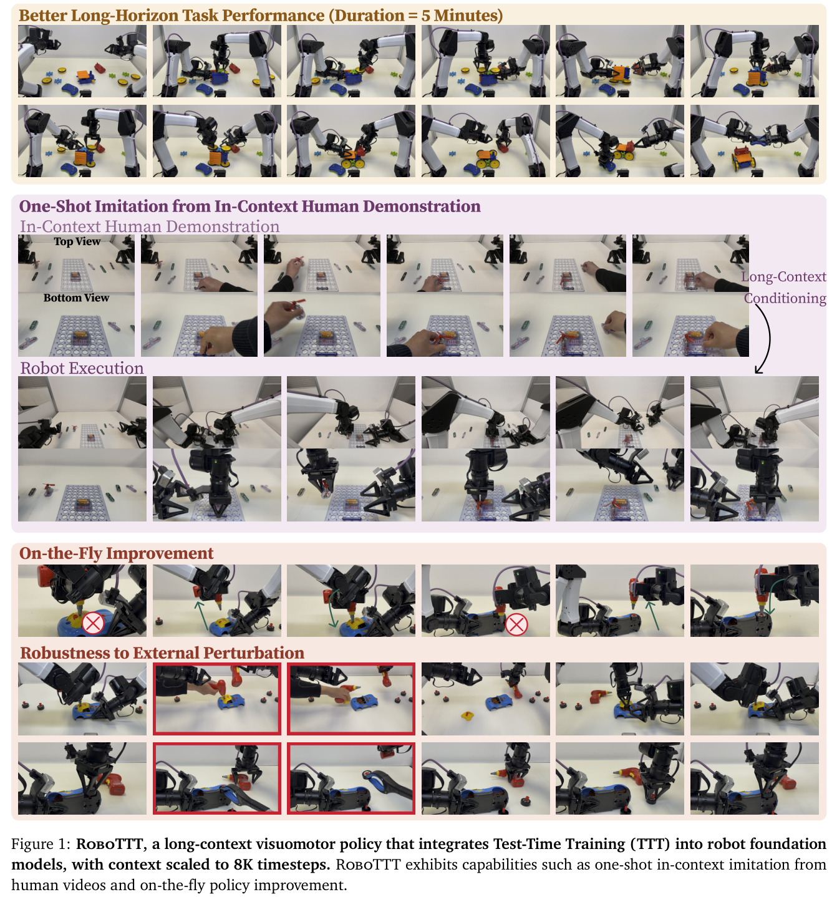
Current robot foundation models use single-step or short-history context. RoboTTT (Test-Time-Training Robot Policies) is a model and training recipe that scales visuomotor context to 8K timesteps without increasing inference latency. At that length it enables:
RoboTTT inserts TTT layers into VLA policies. Their fast weights are updated by gradient descent at both training and inference time. Training combines sequence action forcing with truncated backpropagation through time. On real-robot tasks, RoboTTT improves overall performance by 87% over a single-step baseline. It is the only method to fully complete a five-minute, ten-stage assembly task. The 8K-context model outperforms the 1K-context model by 62%, which the authors present as evidence that context length is a new scaling axis.
Keywords: Long-Context Policies, Test-Time Training, Robot Foundation Models
Context length has become a key scaling axis for LLMs, but robot policies mostly remain short-context. Long visuomotor context matters for one-shot imitation, self-improvement from deployment history, and long-horizon tasks.
RoboTTT-8K reports the following results:
Fast weights address three challenges:
The paper also introduces DAgger Distillation and uses TBPTT to scale training context.
Test-Time Training Mechanism. Fast weights \(W\) parameterize a small network \(f_W:\mathbb{R}^d\to\mathbb{R}^d\). At each step they are first updated:
\[ W_t \leftarrow W_{t-1} - \eta \nabla_W \mathcal{L}_{\mathrm{FW}}\left(f_{W_{t-1}}(K_t), V_t\right) \tag{1} \]Here \(\mathcal{L}_{\mathrm{FW}}(\hat v,v)=\|\hat v-v\|^2\) and \(\eta\) is a learnable learning rate. The updated weights are then applied:
\[ O_t = f_{W_t}(Q_t) \tag{2} \]The projections \(\theta_Q,\theta_K,\theta_V\) and the initialization \(W_0\) are learned with the outer task loss.
Robot Sequence Models. A trajectory is \(\xi=\{(o_t,q_t,A_t)\}_{t=1}^T\). The policy \(\pi(A_t\mid\xi_{<t},o_t,q_t)\) conditions on history, and the goal is to scale \(|\xi_{<t}|\).
This section covers the architecture, the sequence training recipe, long-context conditioning (one-shot video imitation and DAgger Distillation), and implementation details.
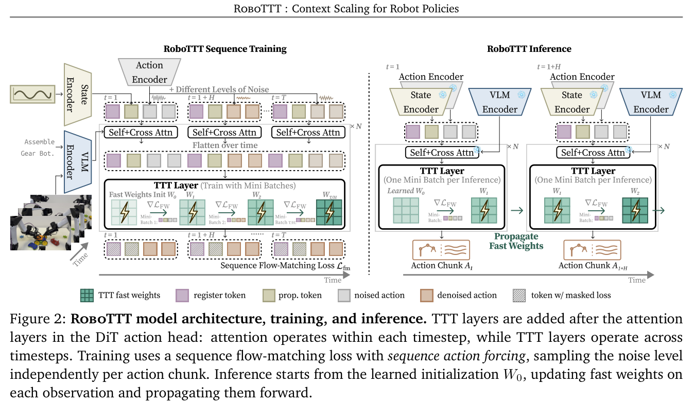
RoboTTT is built on GR00T N1.7. TTT layers are added after the self- and cross-attention layers in the DiT action head. The DiT input is the sequence \([R_1,\Phi_1,q_1,\tilde A_1,\dots,R_T,\Phi_T,q_T,\tilde A_T]\), where \(R_t\) are \(N=16\) learned register tokens. Attention operates per timestep. The outputs \(X=[R_1,q_1,\tilde A_1,\dots]\) are then concatenated over time and passed through the TTT layers. VL tokens bypass TTT for efficiency.
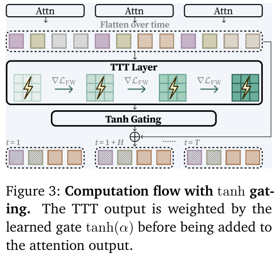
Gating. The gate \(\alpha\in\mathbb{R}^d\) is initialized to 0.001, so TTT contributes little at the start of training:
\[ O = \tanh(\alpha)\odot O_{\mathrm{TTT}} + O_{\mathrm{attn}} \tag{3} \]Fast weights are updated within each training sequence. \(W_0\) is meta-learned through gradients of gradients. The sequence loss is:
\[ \mathcal{L}_{\mathrm{fm}}(\xi;W_0)=\frac{1}{T}\sum_{t=1}^{T}\ell_t\left((l,o_t,q_t,A_t);W_{t-1}\right) \tag{4} \]Sequence Action Forcing. The noise level is sampled independently for each action chunk. Sharing one level across the whole sequence made training unstable, echoing Diffusion Forcing.
\[ \mathcal{L}_{\mathrm{fm}}(\xi;W_0)=\frac{1}{T}\sum_{t=1}^{T}\ell_t(\xi_t;W_{t-1})=\frac{1}{T}\sum_{t=1}^{T}\mathbb{E}_{\tau_t,\epsilon}\left[\left\|v_\theta(\Phi_t,A_t^{\tau_t},q_t;W_{t-1})-(A_t-\epsilon)\right\|^2\right] \tag{5} \]Each noise level is drawn as \(\tau_t=s(1-u)\), with \(u\sim\mathrm{Beta}(1.5,1)\) and \(s=0.999\).
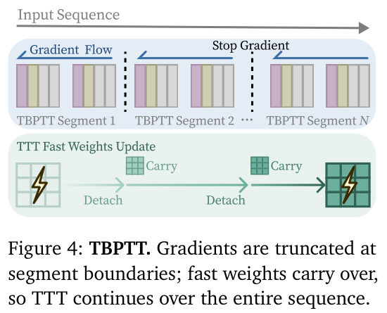
TBPTT. The sequence is split into segments, and gradients are detached at segment boundaries while fast weights carry over. Memory therefore scales with segment length rather than total length. \(W_0\) still receives gradients through the first segment.
Inference. Each rollout starts from \(W_0\). Fast weights are updated on each observation and propagated forward, with \(k\)-step denoising per action chunk.
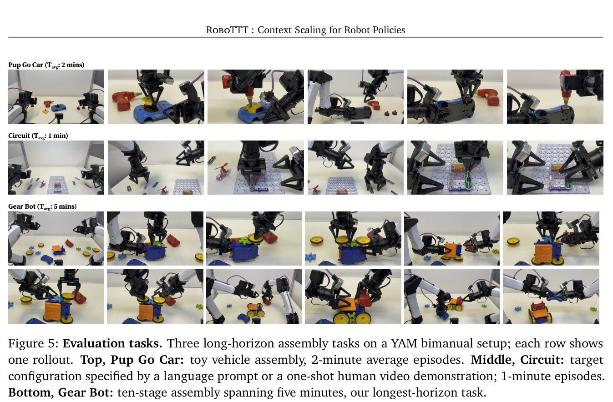
Masking the flow-matching loss on some timesteps turns them into pure context: they update the fast weights without serving as imitation targets.
Imitation from In-Context Video Demonstrations. A human video \(\xi^{\mathrm{video}}\) with masked loss is paired with a robot trajectory \(\xi^{\mathrm{robot}}\) of the same task. At test time, a single video of an unseen configuration is enough for one-shot imitation.
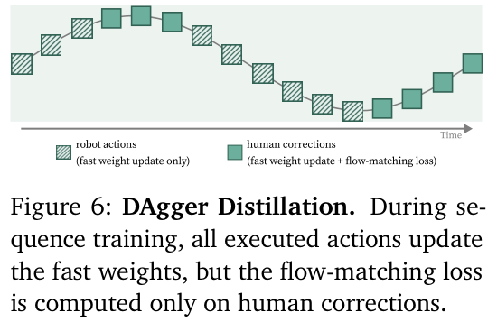
DAgger Distillation. In a DAgger rollout \(\xi^{\mathrm{DAgger}}\), each chunk is either a robot action \(A^{\mathrm{R}}_t\) or a human correction \(A^{\mathrm{H}}_t\). Failures serve as context and corrections as targets, which distills the failure-to-correction mapping into the fast weights. The authors frame this as Algorithm Distillation applied to robotics. At test time, the model's own corrections enter its history in the same way.
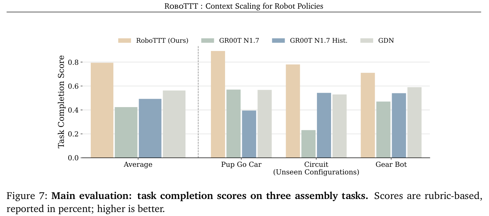
A TTT layer is added to each of the 16 DiT layers, and each fast model is a two-layer MLP. Pretraining uses robot data plus egocentric human data, with context grown up to 8K, for 30K steps on 16 GB200 GPUs. Post-training runs at 1K context for 20K steps.
Settings. Three tasks were run with four RGB cameras, using 8, 6 and 5 hours of data respectively. Circuit has 80 configurations: 20 for training and 60 for testing.
Baselines:
Each policy gets 20 trials per task (10 for Gear Bot).
Main results. RoboTTT averages 79% task completion, versus 42% for GR00T N1.7 and 56% for GDN. Qualitatively it tracks task progress, recovers strategically, and is more precise in fine-grained stages.
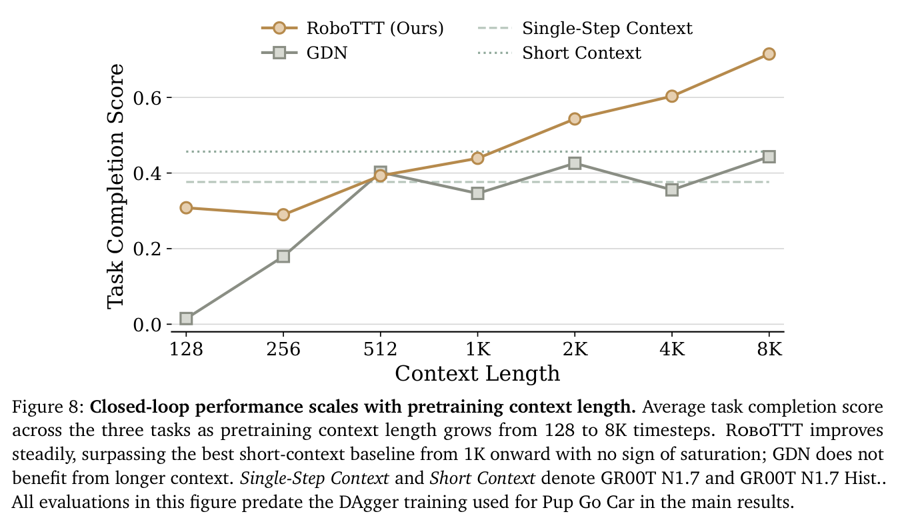
| Method | Pup Go Car | Circuit | Gear Bot |
|---|---|---|---|
| RoboTTT | 9 / 20 | 13 / 20 | 2 / 10 |
| GR00T N1.7 | 3 / 20 | 3 / 20 | 0 / 10 |
| GR00T N1.7 Hist. | 0 / 20 | 8 / 20 | 0 / 10 |
| GDN | 3 / 20 | 8 / 20 | 0 / 10 |
History alone. On Pup Go Car, GR00T N1.7 Hist. scores 39.5% versus 57% without history. GDN improves over GR00T N1.7 on Circuit and Gear Bot only. The authors attribute RoboTTT's advantage to its nonlinear, gradient-based update rule.
Context scaling. RoboTTT reaches 71.5% at 8K, compared with 43.9% at 1K and 45.6% for the best short-context baseline. GDN shows no such trend. Below 1K context, rollouts exceed the trained window.
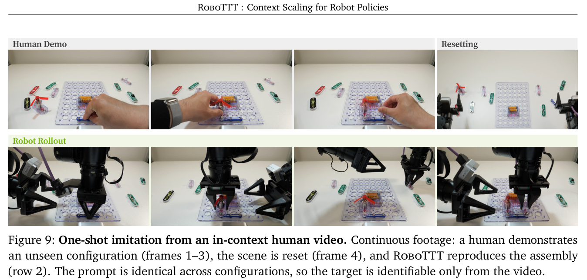
| Task Completion Score | Number of Successful Rollouts | |
|---|---|---|
| RoboTTT | 65% | 6 / 10 |
| GDN | 33% | 0 / 10 |
| Method | Roof Perturbation | Tire Perturbation |
|---|---|---|
| RoboTTT | 15 / 20 | 18 / 20 |
| GR00T N1.7 | 10 / 20 | 11 / 20 |
| GR00T N1.7 Hist. | 3 / 20 | 5 / 20 |
| GDN | 13 / 20 | 18 / 20 |
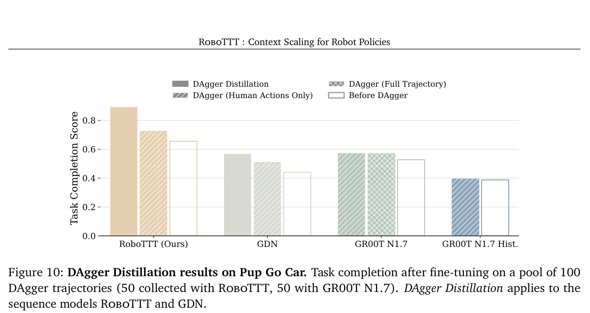
DAgger. Standard DAgger improves the base policies by 9% on average (13% for the sequence models). DAgger Distillation improves them by 33% on average: 36% for RoboTTT and 29% for GDN. Fine-tuning GR00T N1.7 on full trajectories gives the same result as corrections only (57% in both cases), so the robot's failed actions are useful as context rather than as targets.
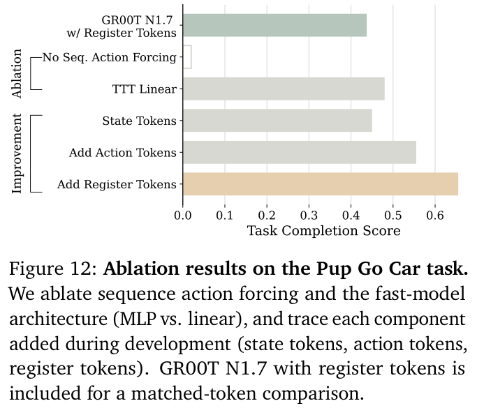
Ablations.
Long-Context Policies. Most VLAs and WAMs condition on one to a few frames. Other approaches use keyframe or language memory, or autoregressive full-history models whose latency grows with context. RoboTTT can be seen as an RNN whose state is fast weights, and it targets the spurious correlations that history can introduce.
Test-Time Training. Prior TTT work spans language, video, vision and 3D. Earlier robotics papers that use the term "test-time training" fine-tune the whole model rather than using fast weights. The closest work is VITA, which applies fast weights to value functions.
Robot Foundation Models. These include autoregressive and diffusion/flow VLAs. RoboTTT is presented as a plug-in module, instantiated here on GR00T N1.7 and scaled to 8K timesteps (about five minutes at 30 Hz).
Limitations:
The authors conclude that context length is a new scaling axis for robot foundation models.
The authors thank collaborators, the compute support staff, the robot operators, and the NVIDIA GEAR Team and Stanford Vision and Learning Lab.
The base model is GR00T N1.7 (Eagle VLM plus DiT). The DiT has 538M parameters; each TTT layer adds about 10M, for roughly 690M in total. Each fast model is a two-layer GeLU MLP updated by plain gradient descent. The inner learning rate is learned on top of a base rate of 0.1. Positional embeddings use RoPE with \(\theta_{\mathrm{rope}}=10000\).
Pretraining tunes only the new sequence layers, while post-training fine-tunes all parameters. Settings:
Models run on the YAM robot with four RealSense D405 cameras streaming 480p RGB. Inference uses an RTX 5090 at 30 Hz.
Pup Go Car. The robot assembles the roof and first wheel, which involves drilling, handoffs and a car flip. Rubric milestones and scores:
At most two attempts are allowed for wheel assembly.
Gear Bot. Each of the following earns +0.1: each of two chassis flips, each gear or wheel installation, installing the head, and using the remote successfully.
Circuit. Two or three components are assembled in a specified order (about 80 configurations). Points per item:
A wrong assembly order earns no credit.
Baselines. The GR00T baselines use the official implementation. GDN layers come from FLA, with placement, gating and parameter count matched to RoboTTT.
Evaluation. Initial object placements are recorded and reproduced for every method. Pup Go Car and Circuit get 20 rollouts each. Gear Bot and one-shot Circuit get 10 each because of their longer evaluation time.